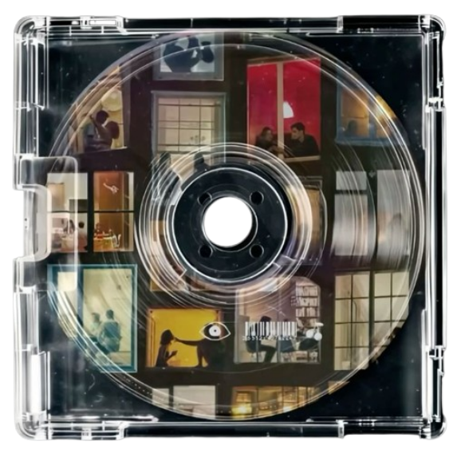

Música br Na Mídia

- A música brasileira é uma das maiores expressões culturais do país e tem grande
presença na mídia. Com uma diversidade de ritmos como samba, MPB, sertanejo, funk e rap, ela se adapta
ao tempo e alcança diferentes públicos. Hoje, além das rádios e da TV, plataformas digitais como
YouTube, Spotify e TikTok são os principais meios de divulgação e consumo. Artistas como Anitta, Alok e
Matuê conquistam espaço dentro e fora do Brasil, levando a música nacional para o cenário global.
Através das letras e ritmos, a música também reflete questões sociais e dá voz a diferentes realidades
do país.
- Diversidade de Gêneros
Samba, MPB, sertanejo, forró, funk, rap e trap refletem a riqueza cultural.
Funk e trap estão em alta entre os jovens.
Sertanejo domina rádios e festas.
- Plataformas Digitais
Spotify, YouTube e TikTok são os principais meios de divulgação.
A TV ainda tem espaço, mas perde força para redes sociais.
- Artistas em Destaque
Anitta e Alok têm grande destaque internacional.
Nomes como Ludmilla, Pabllo Vittar e Matuê crescem nas redes.
- Temas e Tendências
A música aborda feminismo, racismo e questões sociais.
Gêneros urbanos trazem a voz da periferia e da juventude.